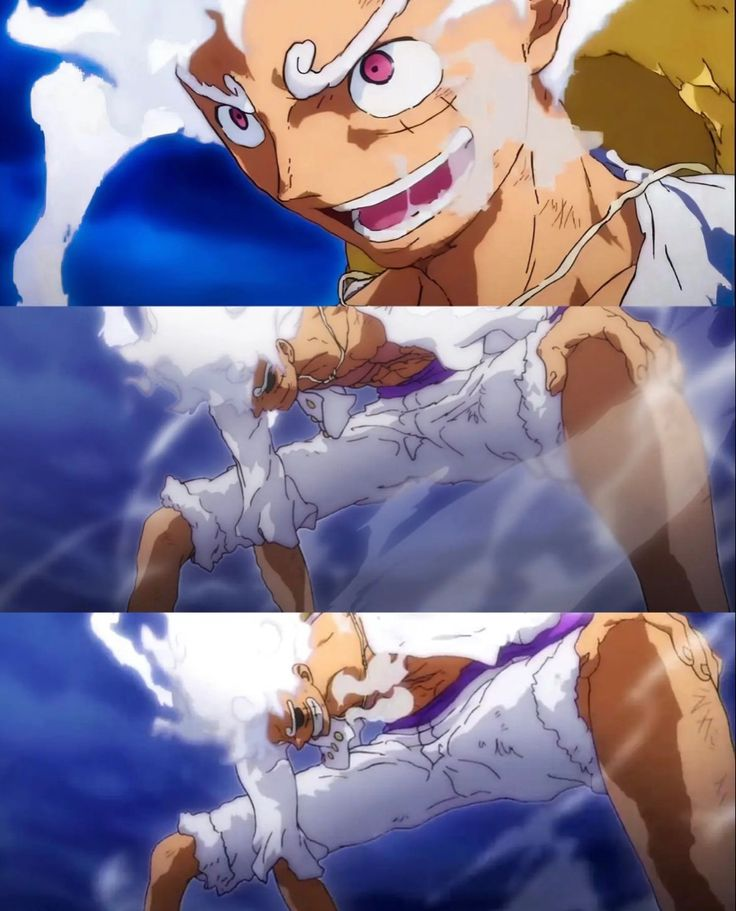

01 / CHARACTER IMPACT
North star / favorite in all fiction
Luffy
The GOAT for me. What makes Luffy special is not just the gears, fights or ridiculous move names. It is the way he stays loyal to his morals, protects his people at any cost, keeps the same dream even when the world laughs, and keeps moving after moments that should have broken him. He also helped me loosen the grip of overthinking and enjoy the part of life that is actually happening now.
People’s dreams never end.
Dream loudlyProtect your peopleNever give upGo with the flow
The Wano fits and Gear 2 → Gear 5 hype are absolutely part of the case too.